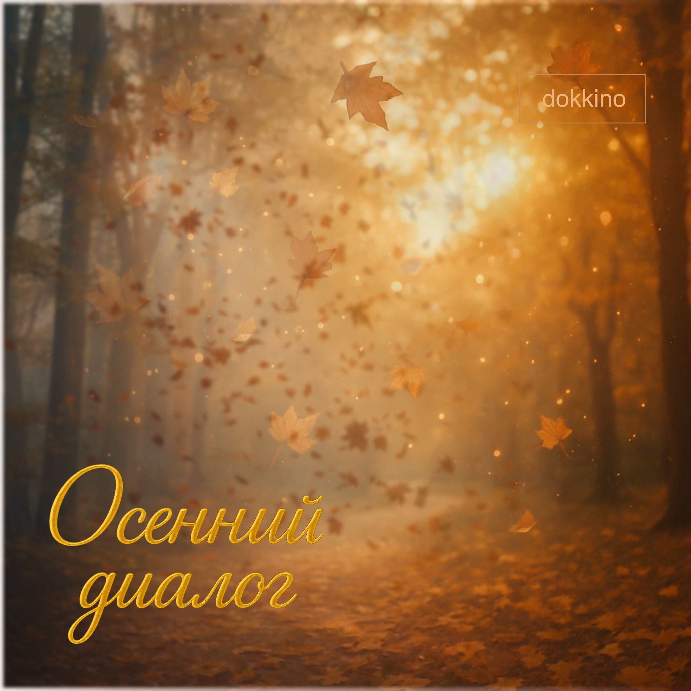

Автор текста: Сергей Мачуляк, 2016
Музыка: Сергей Мачуляк
Релиз: 29 октября 2025
© Сергей Мачуляк. Все права защищены.
«Осенний диалог» — камерная акустическая фолк-баллада, в которой Осень становится живым существом — свободным, насмешливым и мудрым. Песня превращается в светлую поэтическую притчу о быстротечности человеческой жизни, очищении и переходе от одного её сезона к другому.
«Осенний диалог» — песня о встрече человека со временем, которое невозможно остановить.
Осень входит в город без разрешения и смущения. Она появляется среди закрытых окон, отражается в них птицами, бросает листья на балконы и танцует с листвой канкан. Пока люди устало бродят по паркам и площадям, погружённые в привычные заботы, Осень смеётся — не жестоко, а словно удивляясь тому, насколько серьёзно человек относится к своей временной роли.
Закрытые окна становятся образом внутренней отгороженности. Люди перестали замечать птиц, небо, листья и движение жизни вокруг себя. Но природа всё равно входит в их мир — отражением в стекле, дождём, ветром и листвой на балконе.
Осень напоминает человеку о неизбежном без трагического пафоса. Она смотрит людям в лица, смеётся, поливает их дождями, а затем уходит ночью так же свободно, как появилась. Завершение сезона здесь — не ошибка и не наказание, а часть естественного порядка.
После её ухода Зима объясняет то, что Осень пыталась сказать: «Листва — это вы на закате, а я постелю вам кровать».
Человек подобен листу на великом Дереве жизни. Он появляется, раскрывается навстречу свету, проживает свой сезон и однажды покидает ветвь. Но опавший лист — не смерть самого дерева. Жизнь продолжается, а Зима становится не концом, а временем сна и покоя.
Особое значение имеют дожди. В финале раскрывается их смысл: «Вас омывали они». Дождь здесь не оплакивает человека, а очищает его, смывая пыль прожитого сезона и подготавливая душу к переходу.
Поэтому «Осенний диалог» говорит не столько о смерти, сколько о доверии к вечному движению жизни. Осень смеётся и танцует, потому что знает: листопад — не исчезновение дерева. Это лишь завершение одного прекрасного сезона.
Осень вошла, не смущаясь,
В город закрытых окон,
Птицами в них отражаясь,
Кидая листву на балкон.
Люди устало бродили
По паркам, по площадям.
Осень смеялась над ними,
Танцуя с листвою канкан.
Осень напоминала,
Смотрела нам в лица, смеясь,
Дождями с утра поливала,
А ночью ушла, не стыдясь.
Зима нам пыталась ответить,
Что Осень хотела сказать:
«Листва — это вы на закате,
А я постелю вам кровать».
Люди, как дети, не верят —
Жить будут вечно они!
А что же дожди означали?
Вас омывали они.